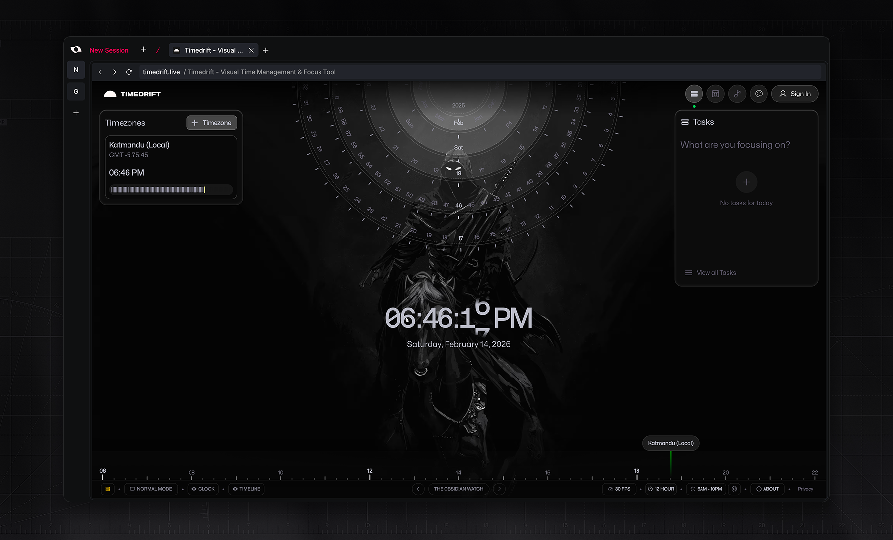

Standard browsers are built for consumption; Astra is built for creation.
A high-fidelity, distraction-free workspace that lets you seamlessly manage multiple identities, isolate environments, and stay entirely focused on your work.
Leave the noise behind. Step into the workspace.

Instruments, not just tools.
Quality work requires a quality environment. When you are building and shaping the web, you have to look at your work from multiple perspectives. But mass-market browsers fight against you—forcing you into a chaotic dance of incognito windows, constant log-outs, and tangled session data.
Astra is a sovereign workspace designed to remove that friction. We stripped away the bloat of modern browsing to build a pure, focused medium. It's an environment where every pixel, shortcut, and interaction is tuned for the people who care deeply about what they create.
The Astra Instruments
Sovereign Sessions
Experience every angle, simultaneously.
Step into multiple roles without losing your place. Astra's hardware-level isolation lets you log into different accounts side-by-side in the same window. No cookie bleed. No incognito tabs. Just perfect, parallel testing for the software you are shaping.
Structured Workspaces
Architected for deep work.
Leave the anxiety of infinite, unorganized tabs behind. Astra introduces a hierarchy built for real workflows: Workspaces → Identities → Views. Group your contexts logically so your digital environment matches your mental model.
Local Sovereignty
Fast. Light. Completely yours.
A tool should respect its maker. Your history, active sessions, and data are stored locally in an SQLite database on your machine. No telemetry, no cloud syncing your secrets. True privacy and speed, right out of the box.
The Evolving Orbit
A growing arsenal for the craft.
Astra isn't a static product; it's an evolving Swiss Army knife for your workflow. From native focus-tracking (via Timedrift) to built-in development utilities, we are continuously forging the instruments you need directly into the frame.